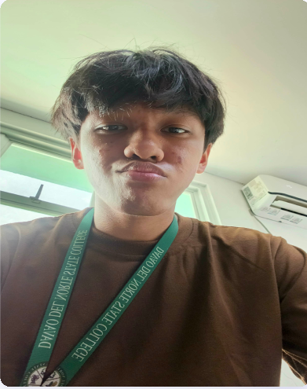

Technical
- HTML & CSS
- Git & GitHub
- Basic coding with Visual Studio Code
IT Student • Aspiring Web Developer
I am an Information Technology student interested in web development, UI/UX design, and technology. I enjoy learning new technologies and building useful, user-friendly projects.

Open to learn
and collaborate
WEB / UIUX
PORTFOLIO 2026
I use Visual Studio Code for basic coding and Figma for interface design. I am motivated by turning ideas into clear, practical digital solutions.
A growing foundation built through coursework, practice, and school projects.
02 / WEB
A responsive travel landing page designed to introduce destinations with a simple, engaging layout.
03 / SECURITY
A class project exploring secure digital practices and the foundations of web defense.
My experience is currently rooted in coursework, training, and IT-related school projects.
Completed programming training.
Completed cybersecurity training.
Completed IT-related school projects.
Bachelor of Science in Information Technology · 4th Year
Completed programming training.
Completed cybersecurity training.
Completed IT-related school projects.
For an opportunity, collaboration, or project conversation, you can reach me using the details below.
Email MePanabo City, Davao del Norte, Philippines